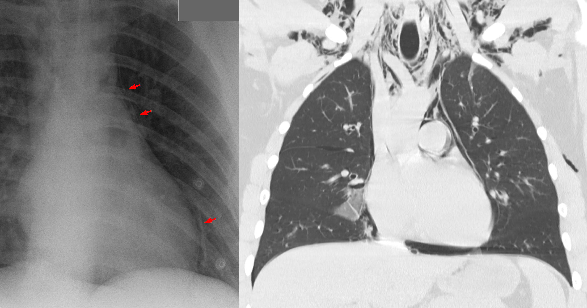
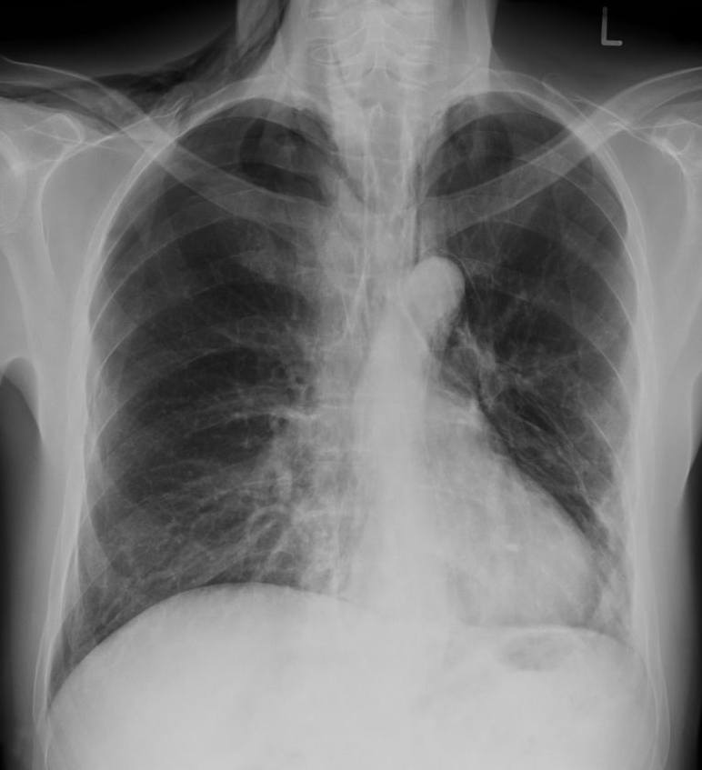
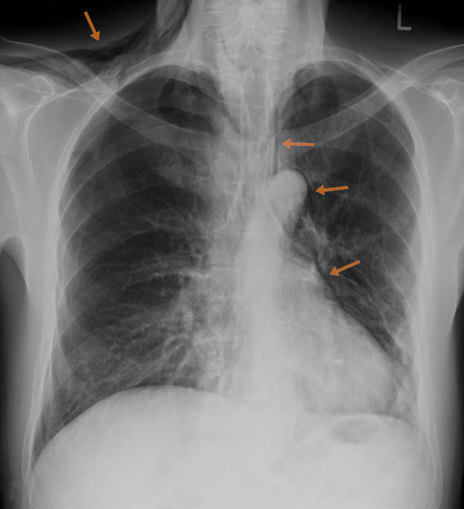

061 — Tràn khí trung thất / Pneumomediastinum
Tags: pattern:khi-trung-that vung:trung-that
Mức chắc chắn (certainty): tổng hợp y văn (literature synthesis) — nhóm tự biên từ y văn mở, chưa gắn ca nguyên văn đơn lẻ.
1. Tổng quan — khí ra trung thất theo 3 đường + Macklin
- Khí từ vỡ phế nang đi theo bao mạch-phế quản vào trung thất (hiệu ứng Macklin), từ thủng thực quản/khí quản, hoặc từ cổ/xương sườn chấn thương.
- Dấu X-quang: đường sáng song song bờ trung thất, liên tục với khí dưới da cổ; dấu cánh buồm (spinnaker sail) ở trẻ (tuyến ức nâng lên); CT: khí viền ĐMC/tim/thực quản + lan lên cổ.
- TẠI SAO phải tìm thủng thực quản mọi ca: viêm trung thất hoại tử tử vong > 20% nếu mổ muộn — khí trung thất + sốt + đau nuốt + khí dưới da = thủng đến khi chứng minh ngược lại.
2. Gamut theo bối cảnh
- Tự phát (thanh niên, gắng sức/nôn): lành tính, theo dõi — nhưng vẫn phải loại thủng (Boerhaave sau nôn ói dữ dội).
- Chấn thương (gãy xương sườn, tai nạn): kèm tràn khí/tràn máu, vỡ PQ (khí nhiều + xẹp không nở dù dẫn lưu).
- Thủng thực quản (K, nội soi, Boerhaave): khí + dịch trung thất + sốt — cấp cứu ngoại khoa.
- Thở máy áp lực cao: barotrauma ICU — giảm áp lực, dẫn lưu nếu kèm tràn khí áp lực.

X-quang: đường sáng song song trung thất. CT coronal: khí tự do lên cổ + tràn khí khe nhỏ. Nguồn: Hellerhoff, CC BY-SA 3.0.3. Bảng so sánh
| Thực thể (entity) | Hình ảnh điển hình | Chốt vào (rule-in) | Chốt loại (rule-out) | Gợi ý xác nhận |
|---|---|---|---|---|
| Tự phát (spontaneous) | Khí trung thất + dưới da, không dịch, trẻ khỏe | Trẻ + gắng sức + không sốt/dịch | Sốt + dịch + đau nuốt → thủng | Theo dõi, Oxy, chụp lại |
| Vỡ PQ (tracheobronchial) | Khí nhiều + xẹp không nở + tràn khí áp lực | Dẫn lưu không nở + khí liên tục | Nở tốt sau dẫn lưu → không vỡ lớn | Soi PQ, phẫu thuật |
| Thủng thực quản | Khí + dịch trung thất + sốt + đau nuốt | Dịch + sốt + bối cảnh K/nội soi/nôn | Khí thuần không dịch + trẻ khỏe → tự phát | CT cản quang uống + nội soi, mổ sớm |
| Barotrauma ICU | Thở máy + khí trung thất/tràn khí mới | Áp lực cao + mới xuất hiện | Ngoài máy thở → nguyên nhân khác | Giảm áp, dẫn lưu khi cần |
4. Protocol
- X-quang + CT cản quang (uống + tiêm): uống tìm rò thực quản; tiêm đánh giá mạch/mô mềm.
- Nghi thủng: nhịn ăn + kháng sinh phổ rộng + hội chẩn ngoại lồng ngực sớm (vàng 24 giờ).
- Tự phát: nghỉ ngơi + tránh gắng sức/lặn bay 2–4 tuần.
5. Cạm bẫy
- Khí trung thất lượng ít lẫn với nếp da/mỡ — cuộn CT xác nhận, đừng bỏ sót thủng.
- Tràn khí màng tim (sau mổ tim): khí quanh tim không lên cổ — khác khí trung thất lan cổ.
- Boerhaave sau nôn: đau ngực sau nôn + khí trung thất = thủng đến khi chứng minh ngược lại (Mackler cổ điển: nôn + đau ngực + khí dưới da).
6. Tự lượng giá — Blind Quiz
Ca 1 — K thực quản + đau nuốt + sốt. Tìm dải sáng quanh quai ĐMC.

- Hỏi: dải sáng quanh quai ĐMC là gì? Bối cảnh này nguy hiểm nhất là gì?
Bấm để hiện đáp án

- Thủng thực quản do K: khí trung thất (dải sáng quanh quai ĐMC) + sốt + nuốt đau — mổ cấp cứu, không theo dõi như tự phát.
- Nguồn: Hellerhoff, CC BY-SA 4.0.
Ca 2 — Thanh niên đau ngực sau tập gym, X-quang đường sáng trung thất, không sốt: xử trí? (Quy tắc mục 4.)
Bấm để hiện đáp án
- Tự phát: loại thủng bằng hỏi nuốt/sốt + CT nếu nghi ngờ; còn lại nghỉ ngơi + Oxy + tránh gắng sức.
Bài liên quan chéo
- 001 – Tổng quan hệ Ngực
- 041 – Tràn khí màng phổi (khí màng phổi kèm)
- 060 – Khối trung thất ITMIG (u thực quản)
Không dùng để chẩn đoán độc lập khi chưa có người hướng dẫn.